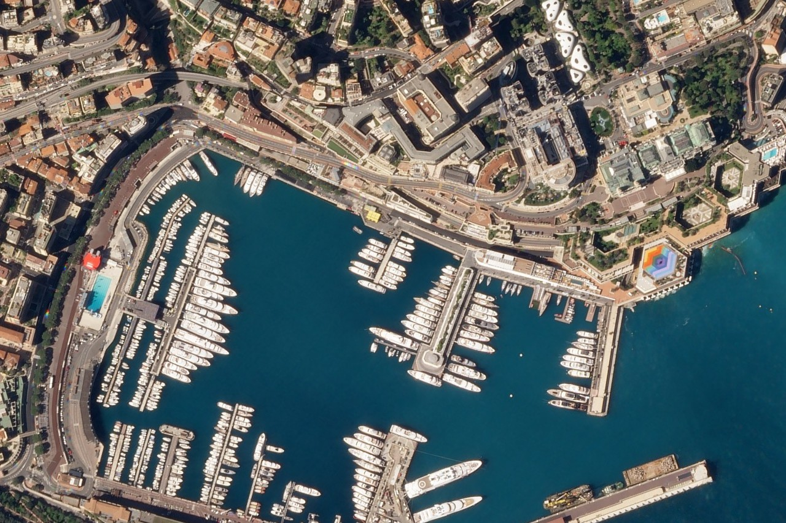

S1S2
S1S2
Target · On track2024 Dutch GP
CandidateSteffen Prößdorf · CC BY-SA 4.0
Every series.
One feed.
F1, MotoGP, NASCAR and WEC: verified news, timed and in our own words.
S1S2
CandidateSteffen Prößdorf · CC BY-SA 4.0
F1, MotoGP, NASCAR and WEC: verified news, timed and in our own words.


8 stories
3 stories
Coverage pending verification
3 stories